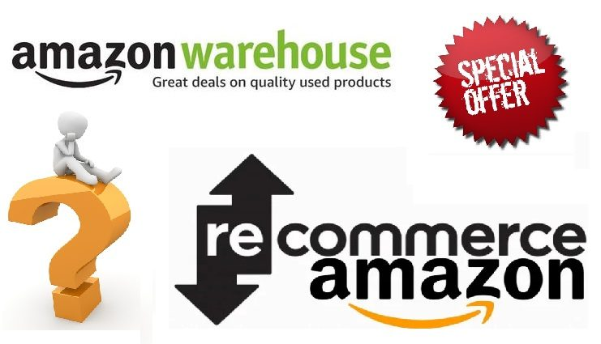

#APPROFONDIMENTI👥
⬆️📌 AMAZON WAREHOUSE DEALS & AMAZON RECOMMERCE.
Come anticipato, visto l'interesse per il precedente articolo sull'utilizzo gratuito della piattaforma KEEPA, (di cui riporto il link), strumento che ti permette di verificare il grafico d'andamento prezzi di ogni prodotto in vendita su Amazon, andiamo ad analizzare altre particolarità di AMAZON che non tutti conoscono, ma davvero molto interessanti.
Amazon Warehouse Deals:
Esso è il mercato dell’usato certificato Amazon in cui si rivendono gli oggetti restituiti entro 30 giorni ad Amazon, ancora coperti da garanzia e perfettamente funzionanti.
✅ Da dove proviene la merce usata?
Amazon Warehouse funziona esattamente come il normale sito web, fatta eccezione per la condizione della merce venduta: è tutta e sempre usata al massimo per 30 giorni e poi restituita.
I motivi del reso possono essere molteplici: danneggiamento durante il trasporto, prodotto non all’altezza delle aspettative e così via. In ogni caso questi oggetti non possono essere rivenduti come nuovi e ciò giustifica l’esistenza di Amazon Warehouse Deals.
✅ Quali sono le garanzie?
Ecco che cosa dice Amazon:
- “Posso restituire un prodotto? Sì. Se un prodotto non ti soddisfa per qualsiasi ragione, puoi restituirlo secondo la politica dei resi di Amazon. (Quindi entro 30 giorni) Poiché i prodotti ricondizionati di Amazon sono unici, non potremo effettuare una sostituzione, ma ti rimborseremo l’importo dell’acquisto.
- I prodotti ricondizionati hanno la garanzia del produttore? No. I prodotti usati in generale non hanno la garanzia del produttore, ma tutti i nostri prodotti beneficiano della politca dei resi di Amazon, per la quale i prodotti difettosi possono essere restituiti entro 2 anni dall’acquisto.”
✅ Come funziona?
Ciò che caratterizza molto questo market-place dell’usato è l’esistenza di una lista delle condizioni degli oggetti usati.
Come accennato, tutti gli oggetti sono funzionanti al 100% e presentano danni minuziosamente descritti (non vi sono foto).
Di seguito la lista delle condizioni dell'oggetto:
- Usato come nuovo - L’oggetto non presenta assolutamente alcun segno di usura o danno. Spedito con tutti gli accessori e la scatola originali. Nulla da dire. Prezzo più basso del nuovo, in genere di un 5-15%.
- Usato ottime condizioni - L’oggetto presenta piccole imperfezioni. Mi sento di dirti a cuor leggero che l’usato in ottime condizioni corrisponde all’usato come nuovo. Gli sconti sul prezzo si aggirano sul 20-40%
- Usato condizioni accettabili - Nonostante le descrizioni degli oggetti possano trasmetterti l’idea di un prodotto che sta cadendo a pezzi, provalo. Tante volte i danni sono contenuti e sono davvero irrisori per il prezzo fortemente scontato (spesso fino al 50-70%).
✅ Come cercare in Amazon Warehouse?
Nonostante Amazon sia il leader nell’e-commerce, cercare in Amazon Warehouse Deals non è facile. Pochi filtri, impossibilità di elencare per prezzo crescente o per condizioni dell’usato e prezzi scritti in piccolo rendono il processo di ricerca più arduo. I miei consigli per una ricerca efficace sono: visita la categoria Amazon Warehouse Deals da pc (da telefono è più difficoltoso) cerca un prodotto generico, passa le pagine manualmente applicando qualche filtro, confronta il prezzo scontato con quello del prezzo a cui è venduto e usa Keepa o Trovaprezzi per capire se lo sconto è un’offerta oppure no.
Che dire, provare per credere!
Di seguito il link: 👉 Amazon Warehouse Deals
Amazon Recommerce:
Esso è un servizio che Amazon mette a disposizione del cliente che permette di rivendere il proprio smartphone usato ad Amazon stessa.
✅ Le operazioni da fare sono molto semplici:
- Collegarsi al loro sito recommerce che riporto per praticità: Amazon Recommerce
- Cercare il proprio modello e stimarne il valore rispondendo ad alcune domande
- Seguire le istruzioni ricevute via email per spedire il tuo dispositivo
- Una volta ricevuto ed esaminato il dispositivo, l’importo corrispondente sarà trasferito sul conto corrente bancario da te indicato.
✅ Di certo questo servizio ha dei pro e dei contro.
- Come pro abbiamo la garanzia della serietà e professionalità di Amazon, che una volta ricevuto ed esaminato lo stato dello Smartphone con quello da noi dichiarato, provvederà automaticamente ad accreditarci l'importo pattuito. Inoltre una volta decisi di cambiare Smartphone, NON dovremo svenarci alla ricerca di qualche conoscente o in contrattazioni varie con qualche possibile cliente trovato in rete.
- Come contro avremo la probabile valutazione al ribasso del nostro Smartphone, sotto la media di una possibile vendita diretta con un normale acquirente.
Che dire!? Un servizio utile. Tutto dipende dalle nostre priorità!!
Se lo desideri, iscriviti ai mie canali social per restare aggiornato ⬇️
Social MediaInoltre se hai trovato utile ed interessante questo articolo, non esitare a condividerlo, a lasciare un tuo mi piace 👍, o seguire la mia pagina Facebook per sostenermi e continuare ad informare. Grazie anticipatamente a chi vorrà farlo.